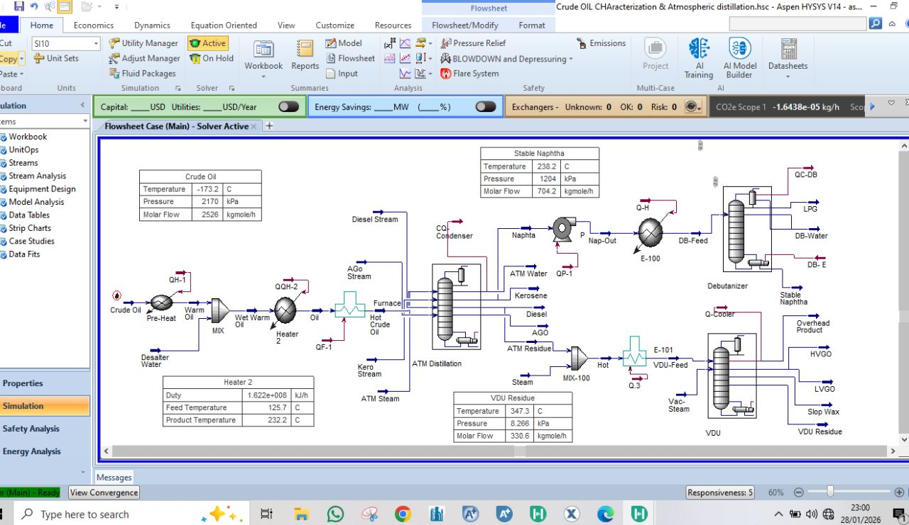
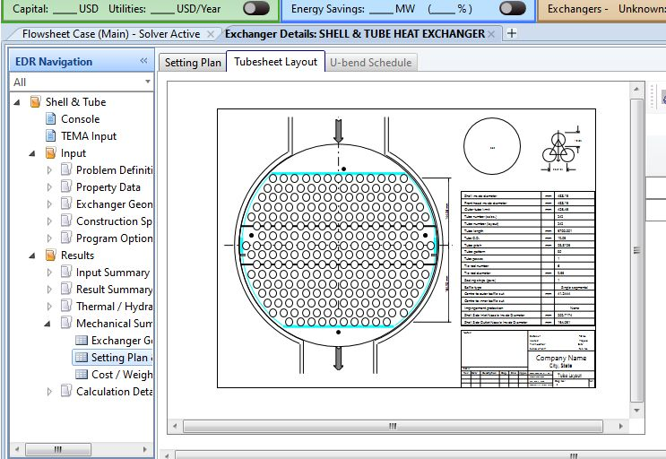
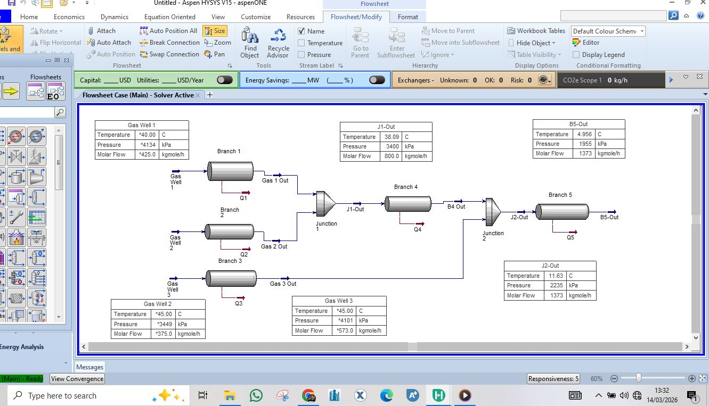
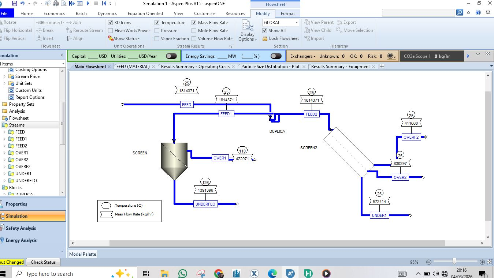
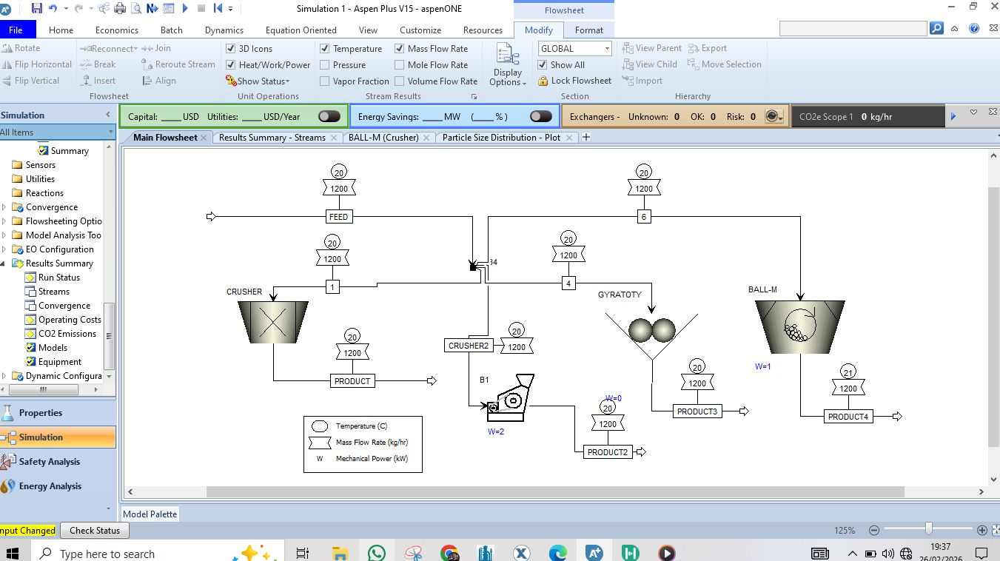
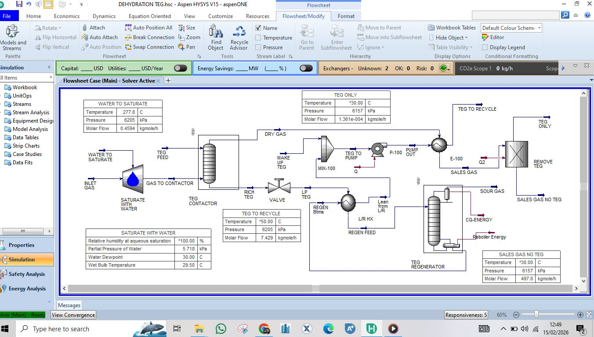
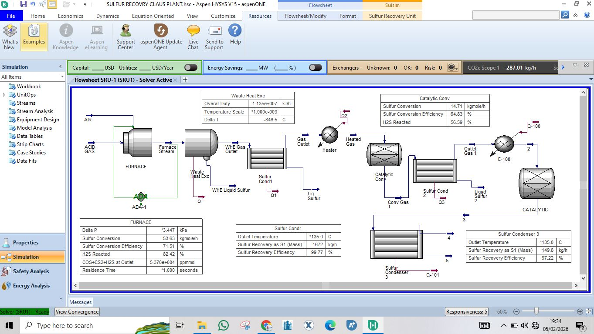
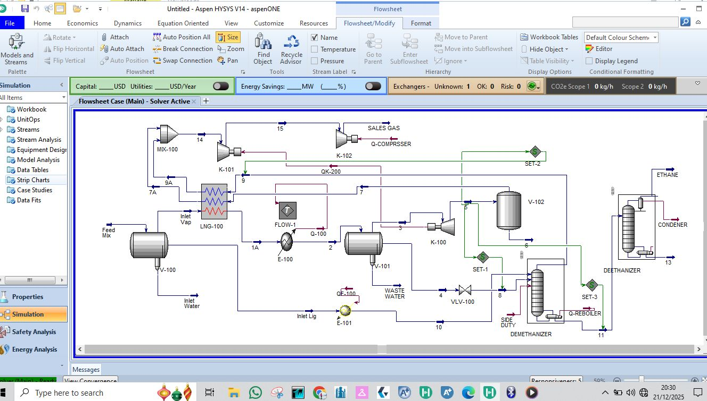
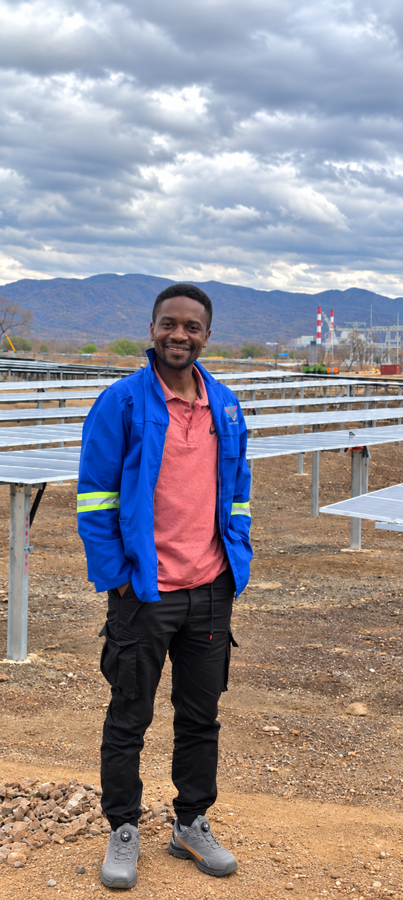

Process Engineering
Process modelling, equipment behaviour, mass and energy balances, troubleshooting and performance analysis.
I combine process engineering, industrial data, machine learning, process simulation, Monte Carlo analysis and optimization to develop practical systems for prediction, troubleshooting and engineering decision support.
ABOUT ME
I am a Chemical Engineer focused on the intersection of process engineering and artificial intelligence.
My approach starts with the engineering problem: understand the physical process, identify variables and constraints, establish engineering relationships, and then apply data analytics, statistical modelling, machine learning or simulation where they create measurable value.
I am particularly interested in systems that move beyond reporting and provide prediction, diagnosis, uncertainty analysis, optimization and decision support.
I also provide practical Aspen Plus and Aspen HYSYS training through ProSim Process, using complete flowsheets and engineering interpretation rather than software navigation alone.
Physics, chemistry, equipment, operating conditions and process constraints.
Measurements, distributions, relationships, uncertainty and process behaviour.
Prediction, diagnosis, probabilistic analysis, optimization and engineering action.
CORE EXPERTISE
Process modelling, equipment behaviour, mass and energy balances, troubleshooting and performance analysis.
Data-driven prediction and pattern recognition for industrial process and quality variables.
Quantifying uncertainty, risk and variability using probability distributions, simulation and sensitivity analysis.
Using engineering models and data-driven methods to investigate improved operating conditions and performance.
Engineering analysis across crushing, grinding, classification, flotation, dewatering and extractive metallurgy.
Turning process measurements into engineering information, KPIs, relationships and actionable insight.
PROJECT PORTFOLIO
This is the core of the portfolio: engineering problems developed into reproducible, data-driven systems. Each project is built around a real process, an explicit engineering model, quantitative analysis, uncertainty and a usable technical outcome.
An integrated engineering and AI system for analysing how ore characteristics and upstream operating conditions propagate through crushing, grinding, classification, flotation, concentrate handling and economic performance.
The portfolio distinguishes independently developed applied systems from projects still being built. The Coal Process Intelligence & AI work documents completed engineering and AI development, while the Copper system remains the current flagship build.
A collection of independently initiated process-engineering and industrial-AI systems developed around coal preparation, quality prediction, process performance, uncertainty and operator decision support.

A process-engineering and AI framework covering raw material preparation, grinding, kiln operation, clinker production, quality, energy consumption and operating variability.
A reusable Monte Carlo framework for propagating uncertain process inputs through engineering calculations and reporting probability distributions, percentiles, sensitivities and risk measures.
The website will only promote a project as complete when the engineering problem, model, data, analysis and technical implementation can be explained clearly.
SIMULATION WORK
A portfolio of actual Aspen Plus and Aspen HYSYS process simulation, equipment design and engineering analysis.
These models span refining, heat-transfer equipment, gas gathering, dehydration, sulfur recovery, gas processing and mineral processing. Each simulation is presented as engineering evidence: the process requirement, modelling approach, key design considerations and the resulting technical insight.

A complete front-end refinery model beginning with petroleum-assay-based crude characterization and preheating, followed by atmospheric and vacuum distillation and LPG recovery through a debutanizer. The model demonstrates the conversion of blended crude into LPG, naphtha, kerosene, diesel, LVGO, HVGO and residue.

A shell-and-tube exchanger design translating a 3.4 MW cooling requirement into a practical BEM configuration. The work connects Aspen Plus process duty and thermal feasibility with HYSYS EDR equipment design, including tube configuration, baffles, heat-transfer performance and pressure-drop constraints.
A rigorous exchanger design for cooling anhydrous ethanol from 65°C to 35°C. The study combines NRTL process simulation, heat-duty evaluation and EDR sizing with LMTD, overall heat-transfer coefficient, pressure-drop and vibration checks, plus equipment-cost estimation.

A three-well natural-gas gathering network model using Pipe Segment modules to evaluate branch pressure drops, buried-pipeline temperature changes, junction mixing and final combined-stream conditions before the processing facility.

A gibbsite–water slurry screening model using RRSB particle-size distribution with US Bureau of Mines and Whiten screening models. The simulation examines coarse, intermediate and fine classification across two screening stages and the resulting PSD behaviour.

A multi-stage coal comminution model using 10 particle-size intervals, RRSB breakage distributions, a constrained gyratory crusher and ball-mill energy analysis. Bond's Law is applied to examine the relationship between energy input and target size reduction.

A complete absorber–regenerator dehydration loop covering lean and rich TEG circulation, regeneration, heat exchange, pumping and recycle. The model evaluates water-removal performance and achieves a simulated water dew point of approximately −36°C at 61 bar.

A Claus-process SRU model covering H₂S partial oxidation in the thermal furnace, waste-heat recovery, catalytic conversion, reheating and successive sulfur condensation. The simulation evaluates sulfur conversion and approximately 95–97% overall sulfur recovery.

An integrated gas-processing model combining compression, gas–gas heat exchange, Joule–Thomson cooling, phase separation and a 17-stage demethanizer. The study investigates hydrocarbon separation and production of methane/ethane-rich sales gas from a mixed hydrocarbon feed.
Selected screenshots are presented as evidence of simulation work. Detailed model files, assumptions and training exercises can be discussed directly for appropriate professional or training enquiries.
WHAT I BUILD
Models that predict process variables, quality indicators, equipment behaviour or future operating performance.
PREDICT →Systems that identify abnormal behaviour, relationships, bottlenecks and potential process causes.
DIAGNOSE →Monte Carlo and uncertainty models that quantify risk, variability and the range of possible outcomes.
QUANTIFY →Engineering and data-driven methods for investigating constrained operating conditions and performance trade-offs.
OPTIMIZE →Applications that combine engineering logic, data and models into usable recommendations for technical decisions.
DECIDE →Process simulation and engineering models used to test scenarios, understand behaviour and support design analysis.
SIMULATE →ENGINEERING TRAINING · PROSIM PROCESS
This is a real technical training service for engineers, students and technical professionals. Training is built around engineering understanding: selecting methods, constructing flowsheets, modelling equipment, solving convergence problems and interpreting results.
Structured process simulation training from fundamentals through equipment, heat exchangers, reactors and flowsheet development.
Practical simulation training covering hydrocarbons, gas processing, refining, equipment and engineering interpretation.
The objective is not simply to produce a converged simulation. Learners develop the reasoning required to build and interpret a meaningful process model.
Crude distillation, gas gathering, TEG dehydration, sulfur recovery, LNG processing, crushing, screening and grinding models are represented in the Simulation Work section above.
TECHNOLOGY
PROFESSIONAL DIRECTION
The goal is to build practical Industrial AI capability from a strong engineering foundation.
The direction combines process engineering, process simulation, industrial data analytics, machine learning, Monte Carlo methods, optimization and software development.
The portfolio will document that progression through increasingly complete engineering systems rather than isolated coding exercises.
Understand the physical process and its constraints.
Extract structure, relationships and uncertainty from industrial data.
Build predictive and diagnostic models around engineering problems.
Deploy models into usable engineering applications and decision-support tools.
CONTACT
Industrial AI, process engineering, simulation and technical training.
For engineering projects, collaboration, Aspen Plus / Aspen HYSYS training, private technical training or professional enquiries, contact Levy directly.
